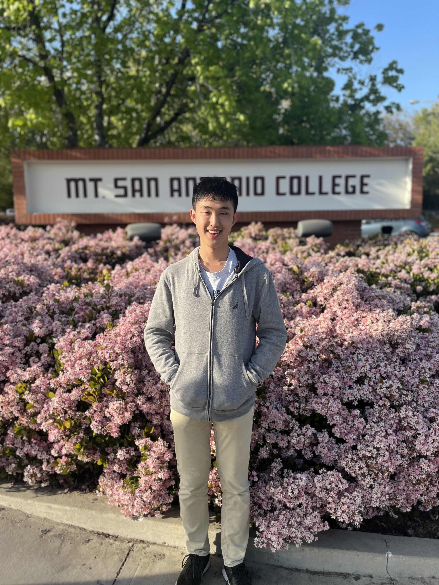

About Me

Meet Lucas, a high school junior with a deep-seated passion for the logical elegance and creative problem-solving offered by mathematics. With an innate ability to abstract complex problems and derive innovative solutions, Lucas has always been drawn towards the universal language of math.
I love the reaction in people’s faces when they ask me what major I want to pursue, and I respond with “math.” Immediately, they stop whatever they were doing, turn to me with an unbelieving face, followed by a bewildered “Are you serious?”. When I respond with “Yes,” they inundate me with questions about what I will do with a degree in math, what will I do for a living, and just in general, why math? To be honest, I haven’t answered many of these questions myself, but ever since my first math competition, I knew the feeling of accomplishment after completing a difficult problem was just what I needed in my life.
Contact Me!


Meet Lucas, a high school junior with a deep-seated passion for the logical elegance and creative problem-solving offered by mathematics. With an innate ability to abstract complex problems and derive innovative solutions, Lucas has always been drawn towards the universal language of math.
I love the reaction in people’s faces when they ask me what major I want to pursue, and I respond with “math.” Immediately, they stop whatever they were doing, turn to me with an unbelieving face, followed by a bewildered “Are you serious?”. When I respond with “Yes,” they inundate me with questions about what I will do with a degree in math, what will I do for a living, and just in general, why math? To be honest, I haven’t answered many of these questions myself, but ever since my first math competition, I knew the feeling of accomplishment after completing a difficult problem was just what I needed in my life.